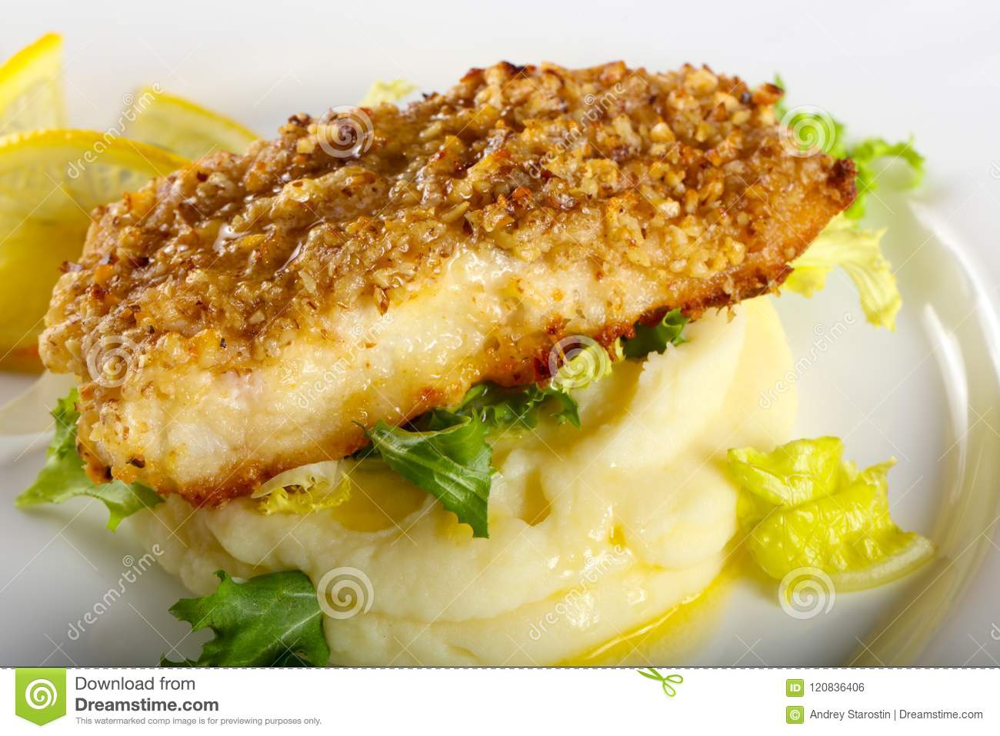

Hake fillet

The delicious and fun hake fillet
This dish is clearly made with hake and acompanied by mashed potatoes. You fry the hake after putting slayed bread all over it and simultaneously
prepare the mashed potatoes.
Ingredients
- 1kg of hake
- 1 package of flour
- 4 eggs
- Potatoes
- Milk cream
- Salt
Steps
- Stir the eggs in a bowl
- Put flour in a plate
- Wet the fillet in a bowl and pass it through the flour and then fry it in a pan
- Chop the potatoes and put them in a cooking pot untill it boils
- Get the potatoes out of the water into other recipient
- Throw milk cream on the potatoes and mash them